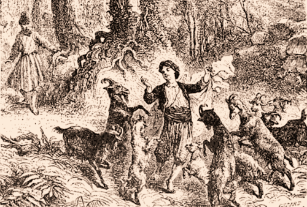
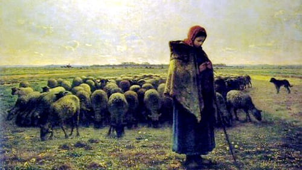

牧羊人的故事
据说是一千多年以前，在9世纪的埃塞俄比亚西南部的高原地区，一位牧羊人发现他的羊吃了一种植物的种子(咖啡豆)后，变得非常兴奋活泼，继而发现咖啡。


懂得欣赏咖啡的人，才会懂得品味咖啡。正如热爱生活的人，才会懂得珍惜眼前的幸福。因为幸福就是沧桑历尽、苦尽甘来的心境。当咖啡已经成为一种生活的必需品，一种生理上的享受，一种精神上的愉快。这种位居世界三大饮料之列的，曾经充满着神秘色彩的饮料，不再是当年的奢华享受、更不再是某种“腐朽生活的象征”，它变得普通、寻常起来，平平静静地置身于我们繁复的生活中，默默地奉献着自己，隐藏了它的荣耀和辉煌。
据说是一千多年以前，在9世纪的埃塞俄比亚西南部的高原地区，一位牧羊人发现他的羊吃了一种植物的种子(咖啡豆)后，变得非常兴奋活泼，继而发现咖啡。
---发生咖啡贸易的国家---
参加国际贸易的咖啡主要有两个品种：一是原产于阿拉伯，现在栽种在拉丁美洲的小果咖啡，一是原产于非洲东部，现在广泛栽种在非洲和亚洲的粗壮咖啡。咖啡生产主要集中在发展中国家，自19世纪中叶以来，巴西一直是世界上最大的咖啡生产国，越南是世界第二大咖啡生产国。咖啡贸易和其它农产品贸易一样，在世界市场上以直接和期货形式销售。
第一个开始咖啡贸易的国家
垄断市场的手法 （咖啡一律用热水烫过，确保种子不能播种)
15世纪

Baba Budan 穆斯林印度人， 放在腰带里的7粒种子
在南印度位于Karnataka区内栽种成功
1650年
荷兰人把咖啡豆带进来
由于1870年发生叶锈病侵害，改种橡胶树和茶叶
1680年